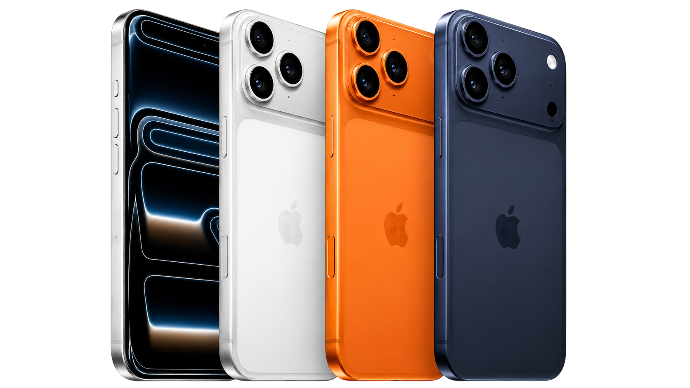

Sobre a Apple Intelligence
O Apple Intelligence representa uma nova geração de inteligência artificial desenvolvida pela Apple para tornar a experiência dos usuários mais intuitiva, produtiva e personalizada. Integrado ao iPhone, iPad e Mac, ele combina modelos avançados de IA com o poder do hardware da Apple para auxiliar em tarefas do dia a dia, como escrita, organização, comunicação e criação de conteúdo. Tudo isso com foco em desempenho, praticidade e privacidade, garantindo que os dados dos usuários permaneçam protegidos.
Recursos do Apple Intelligence
O Apple Intelligence oferece uma variedade de recursos avançados, incluindo:
- Assistente de escrita inteligente para melhorar a clareza e a fluidez dos textos.
- Organização automática de arquivos e fotos para facilitar o acesso e a gestão de conteúdo.
- Comunicação aprimorada com sugestões contextuais para mensagens e e-mails.
- Criação de conteúdo assistida por IA, como edição de fotos e vídeos, para resultados profissionais.